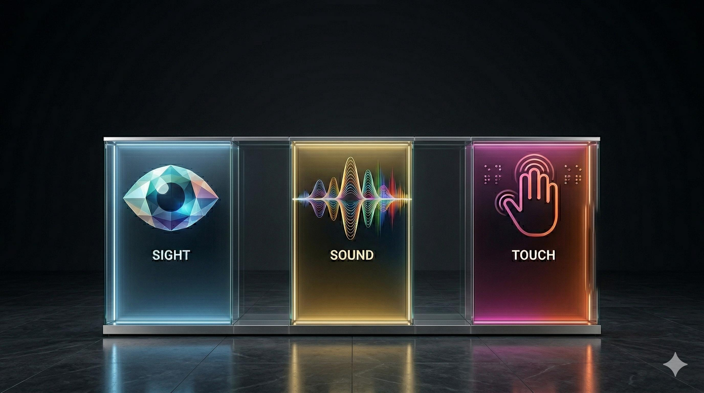

The Web is Sight, Sound, and Touch.
Let's create a web that delights all of the senses. Learn how to make your website sound as good as it looks and ensure the web is accessible to everyone.

Native Web
HTML was built with inclusivity in mind. Learn how semantic tags like <button> and <main> do the heavy lifting for you.
Screen Readers
Your devices already speak. We provide tutorials and live demos for VoiceOver (macOS/iOS), Narrator (Windows), and TalkBack (Android).
Hear the WebMicrosoft Office
Unlock the "Accessibility Assistant" in Word, PowerPoint, and Excel to ensure your spreadsheets and decks are readable by everyone.
MS Office AccessibilityAdobe PDF
A PDF is only as good as its tags. Discover how to use Adobe's built-in tools to create "Tagged PDFs" that follow the standard.
Explore PDF StandardsWCAG & POUR
The Web Content Accessibility Guidelines (WCAG) are built on four pillars - Perceivable, Operable, Understandable, and Robust (POUR). These four pillars are the foundation of a digital world where everyone, regardless of ability, can thrive.
Master WCAG PrinciplesA11y Validation & Test Suite
This website is tested against WCAG 2.1 AA. Here is our validation manifest:
| Success Criteria | Feature Tested | Status |
|---|---|---|
| SC 1.1.1 (Non-text Content) | Descriptive alt text for hero image | ✅ PASS |
| SC 1.4.3 (Contrast) | Text-to-Background ratios (Min 4.5:1) | ✅ PASS (Ratio: 12.6:1) |
| SC 2.1.1 (Keyboard) | Full navigation via Tab/Enter keys | ✅ PASS |
| SC 2.4.1 (Bypass Blocks) | "Skip to Main Content" implementation | ✅ PASS |
| SC 1.3.1 (Info & Relationships) | Semantic HTML Structure & Landmarks | ✅ PASS |